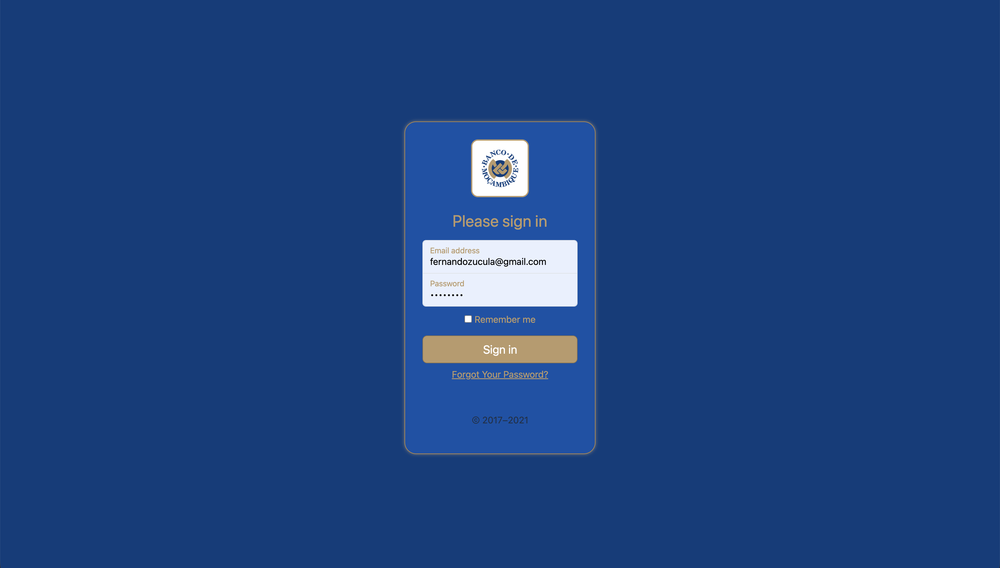
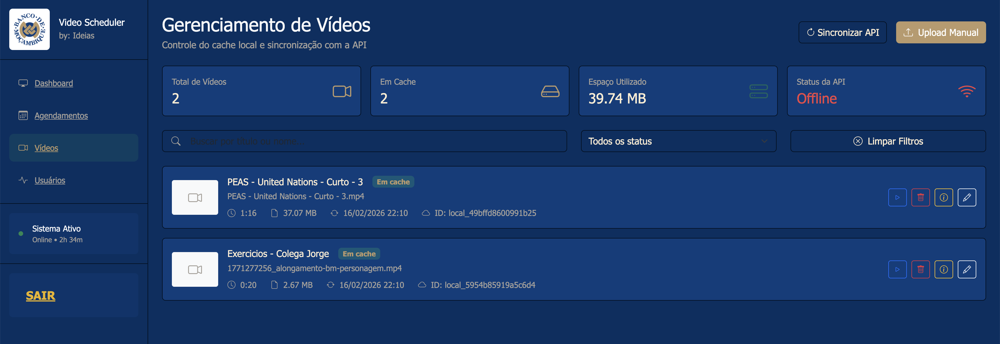
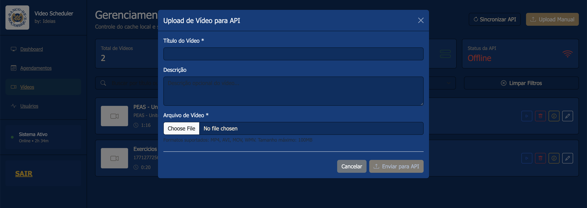
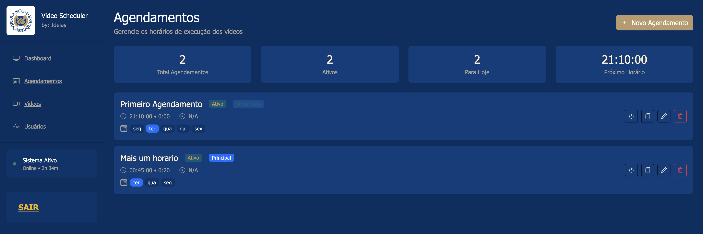
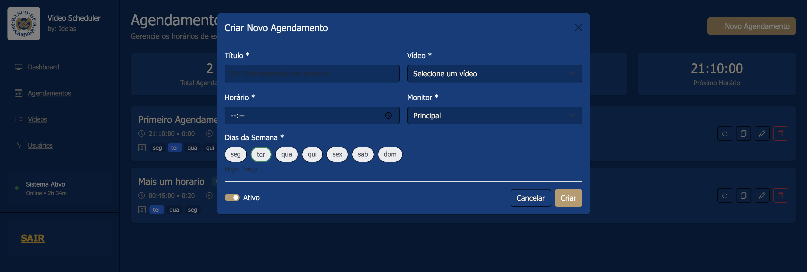
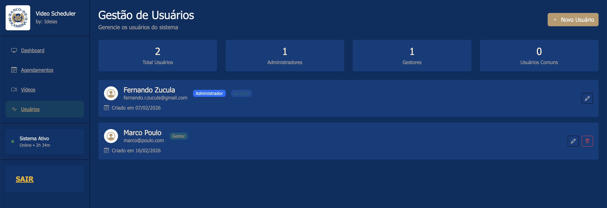
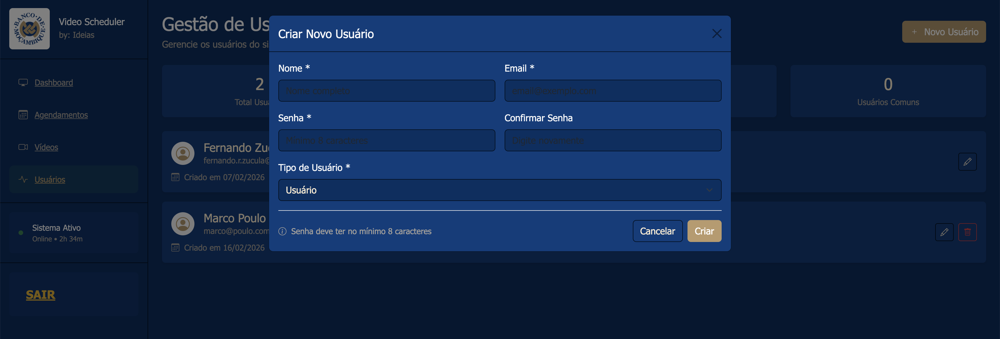

Manual de Utilização do Dashboard Web
1. Acesso e autenticação
- Aceder ao URL oficial do Dashboard.
- Autenticar-se com credenciais válidas.
- Confirmar o perfil atribuído e permissões disponíveis.

2. Gestão de vídeos

2.1 Botões e comandos (ecrã Vídeos)
| Botão/controlo | Função | Resultado esperado |
|---|---|---|
| Sincronizar API | Reconcilia registos com os ficheiros existentes na directoria de vídeos. | Actualiza duração/metadados, remove inválidos e evita duplicados. |
| Upload Manual | Abre popup para carregar novo vídeo para o sistema. | Novo vídeo criado com duração detectada e estado operacional. |
| Campo de pesquisa | Filtra por título/nome do vídeo. | Lista reduzida apenas aos itens correspondentes. |
| Filtro de estado | Filtra vídeos por estado (disponível, em cache, etc.). | Visualização focada para operação e auditoria. |
| Limpar Filtros | Repõe pesquisa e filtros para estado inicial. | Lista completa novamente visível. |
| ▶ Reproduzir | Abre visualização do vídeo em popup interno. | Pré-visualização imediata para validação operacional. |
| 🗑 Eliminar | Remove vídeo/registo (local ou cache, conforme origem). | Item removido da lista após confirmação. |
| ℹ Detalhes | Mostra dados técnicos e estado do item. | Informação contextual para diagnóstico. |
| ✎ Editar | Abre popup de edição de metadados do vídeo. | Registo actualizado e reflectido na listagem. |
2.2 Processo de upload de vídeo
- Clicar em Upload Manual.
- Preencher título e seleccionar ficheiro.
- Confirmar duração detectada automaticamente.
- Gravar e aguardar confirmação de sucesso.
- Validar presença do vídeo na listagem e testar com ▶ Reproduzir.

2.3 Processo de edição de vídeo
- No cartão do vídeo, clicar em ✎ Editar.
- Actualizar os campos necessários.
- Gravar alterações e confirmar mensagem de sucesso.
- Revalidar dados na listagem.
2.4 Processo de eliminação de vídeo
- No cartão do vídeo, clicar em 🗑 Eliminar.
- Confirmar acção no diálogo de segurança.
- Verificar remoção na interface e ausência em pesquisas.
- Executar Sincronizar API se necessário, para reconciliação final.
3. Agendamentos

3.1 Botões e acções
- Novo Agendamento: abre popup para criação.
- Editar: altera título, vídeo, horário, dias e monitor.
- Duplicar: cria cópia rápida para variações de horário.
- Activar/Desactivar: controla se o agendamento entra em execução.
- Eliminar: remove o agendamento seleccionado.
3.2 Criar agendamento (passo-a-passo)
- Clicar em Novo Agendamento.
- Definir título, vídeo, hora, dias e monitor.
- Confirmar duração associada ao vídeo.
- Gravar e validar o novo registo na lista.

3.3 Editar e eliminar agendamento
- Seleccionar o item na lista.
- Usar Editar para ajustes ou Eliminar para remoção.
- Confirmar alterações e testar execução no horário seguinte.
4. Utilizadores e permissões

4.1 Regras de permissão
- Administrador: cria e edita qualquer utilizador.
- Manager: cria Manager e perfis inferiores.
- Utilizador autenticado: pode editar o próprio perfil.
4.2 Adicionar utilizador
- Clicar em Adicionar Utilizador.
- Preencher nome, e-mail, perfil e credenciais.
- Gravar e validar a nova conta na lista.

4.3 Editar e desactivar utilizador
- Localizar o utilizador na lista.
- Usar Editar para actualizar dados e perfil.
- Usar Desactivar/Eliminar conforme política interna.
5. Relatórios e monitorização
- Consultar Relatórios Recentes com paginação numérica.
- Interpretar eventos por texto intuitivo (não técnico) no frontend.
- Verificar plataformas reportadas (Windows, macOS, Linux).
- Priorizar correcção de playback_error, interrupções e ausência de vídeo.